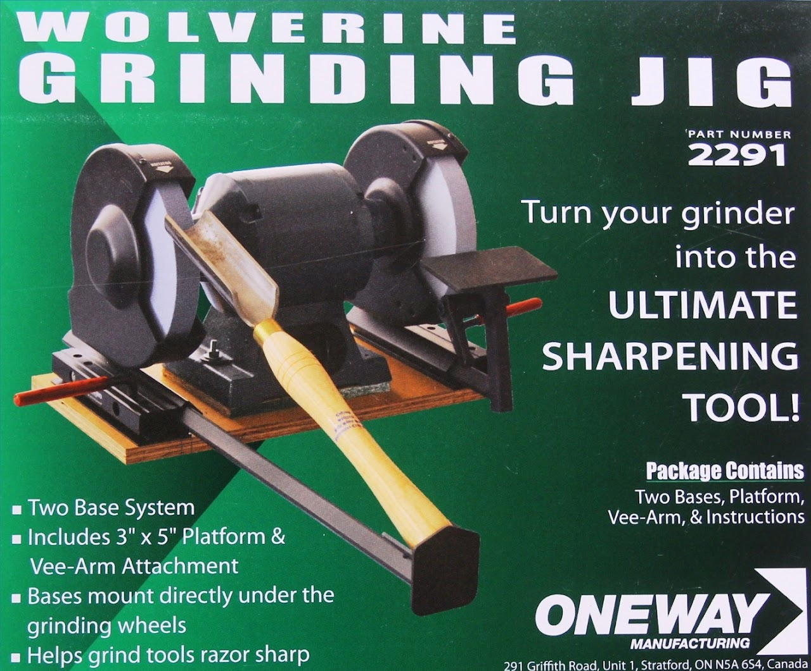

Equipment Inventory
Manufacturer: Rikon
Model#: 80-805 Low Speed Lathe Tool Grinder
Stock#: n/a
Serial#: 1704241040043
Acquired: October 2017

Manufacturer: Tormek
Model#: T-8 Sharpening System
Stock#: n/a
Serial#: 820541
Acquired: September 2021 (Perkins)

Manufacturer: Oneway
Model#: Wolverine Grinding Jig 2291
Stock#: n/a
Serial#: n/a
Acquired: October 2017
Manufacturer: Oneway
Model#: Vari-Grind Fingernail Jig 2480
Stock#: n/a
Serial#: n/a
Acquired: October 2017
For Students / Users
- Sharpening Grinder Safety Guidelines
- Steps for Sharpening Hand Plane Blades and Chisels
- Oneway Bowl Steady 3248 Instruction Manual (Obtained April 2018)
- Oneway Wolvering Grinding Jig #2291 Instruction Manual
- Oneway Vari--Grind Attachment #2480 Instruction Manual
- Rikon 80-805 8" Low Speed Bench Grinder Instruction Manual
- Darex V390 Drill Sharpener -- Operating Instructions (with parts list)
- TTS-100 Turning Tool Setter Selection Chart
- TTS-100 Turning Tool Setter Instructions
- TTS-100 Turning Tool Setter Parts Breakdown
- SVD-186 Gouge Jig Instructions
- SVD-186 Gouge Jig Parts Breakdown
- SE-77 Square Edge Jig Instructions
- SE-77 Square Edge Jig Parts Breakdown
- LA-120 Profiled Leather Honing Wheel Instructions
- LA-120 Profiled Leather Honing Wheel Parts Breakdown
- WM-200 AngleMaster Instructions
- WM-200 AngleMaster Parts Breakdown
- SVS-38 Short Tool Jig Instructions
- SVS-38 Short Tool Jig Parts Breakdown
- SP-650 Stone Grader Instructions
- TT-50 Truing Tool Instructions
- TT-50 Truing Tool Parts Breakdown